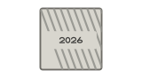
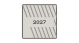
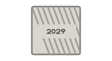

Signs: DirPrimary
11 items: Drawn 1, Placeholder 10
2025Primary-route sign on approaches to junctions (family stand-in)Drawn 2028Primary-route direction (rectangular)Placeholder
2028Primary-route direction (rectangular)Placeholder 2030Primary-route direction at a roundaboutPlaceholder
2030Primary-route direction at a roundaboutPlaceholder 2031The number of a primary routePlaceholder
2031The number of a primary routePlaceholder 2032Primary route forming part of a ring roadPlaceholder
2032Primary route forming part of a ring roadPlaceholder 2033Primary-route direction to parkingPlaceholder
2033Primary-route direction to parkingPlaceholder 2034Route to be followed at junction ahead for destinations that are not otherwise shown on signs for that junctionPlaceholder
2034Route to be followed at junction ahead for destinations that are not otherwise shown on signs for that junctionPlaceholder 2035Direction along a primary route to destinations shown via a U-turn at a roundabout aheadPlaceholder
2035Direction along a primary route to destinations shown via a U-turn at a roundabout aheadPlaceholder

2026Primary-route advance direction (map type)Placeholder
2027Primary-route sign at the junctionPlaceholder2028Primary-route direction (rectangular)Placeholder
2029Directions to a primary route and a non-primary routePlaceholder2030Primary-route direction at a roundaboutPlaceholder2031The number of a primary routePlaceholder2032Primary route forming part of a ring roadPlaceholder2033Primary-route direction to parkingPlaceholder2034Route to be followed at junction ahead for destinations that are not otherwise shown on signs for that junctionPlaceholder2035Direction along a primary route to destinations shown via a U-turn at a roundabout aheadPlaceholder